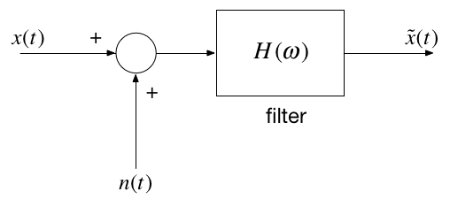
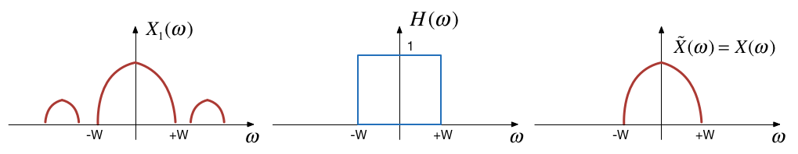

Unit 4.4: Introduction to Filters#
Colophon#
An annotatable worksheet for this presentation is available as Worksheet 9.
The source code for this page is fourier_transform/4/ft4.md.
You can view the notes for this presentation as a webpage (Unit 4.4: Introduction to Filters).
This page is downloadable as a PDF file.
Scope and Background Reading#
This section is Based on the section Filtering from Chapter 5 of Benoit Boulet, Fundamentals of Signals and Systems[Boulet, 2006] from the Recommended Reading List.
This material is an introduction to analogue filters. You will find much more in-depth coverage on Pages 11-1—11-48 of [Karris, 2012].
Agenda#
Frequency Selective Filters
Ideal low-pass filter
Butterworth low-pass filter
High-pass filter
Bandpass filter
Introduction#
Filter design is an important application of the Fourier transform
Filtering is a rich topic often taught in graduate courses so we give only an introduction.
Our introduction will illustrate the usefulness of the frequency domain viewpoint.
We will explore how filters can shape the spectrum of a signal.
Other applications of the Fourier transform are sampling theory (introduced next week) and modulation.
Frequency Selective Filters#
An ideal frequency-selective filter is a system that let’s the frequency components of a signal through undistorted while frequency components at other frequency are completely cut off.
The range of frequencies which are let through belong to the pass Band
The range of frequencies which are cut-off by the filter are called the stopband
A typical scenario where filtering is needed is when noise \(n(t)\) is added to a signal \(x(t)\) but that signal has most of its energy outside the bandwidth of a signal.
Typical filtering problem#

Signal#

Out-of Bandwidth Noise#

Signal plus Noise#

Results of filtering#

Motivating example#
See the video and script on Canvas Week 6.
Ideal Low-Pass Filter (LPF)#
An ideal low pass filter cuts-off frequencies higher than its cut-off frequency, \(\omega_c\).
Frequency response of an ideal LPF#

Impulse response of an ideal LPF#

Filtering is Convolution#
The output of an LTI system with impulse response
subject to an input signal
is given by
Issues with the “ideal” filter#
This is the step response:

(reproduced from [Boulet, 2006] Fig. 5.23 p. 205)
Ripples in the impulse resonse would be undesireable, and because the impulse response is non-causal it cannot actually be implemented.
Butterworth low-pass filter#
N-th Order Butterworth Filter
Remarks
DC gain is
\[|H_B(j0)|=1\]Attenuation at the cut-off frequency is
\[|H_B(j\omega_c)|=1/\sqrt{2}\]for any \(N\)
More about the Butterworth filter: Wikipedia Article
Example 5: Second-order BW Filter#
The second-order butterworth Filter is defined by is Characteristic Equation (CE):
Calculate the roots of \(p(s)\) (the poles of the filter transfer function) in both Cartesian and polar form.
Note: This has the same characteristic as a control system with damping ratio \(\zeta = 1/\sqrt{2}\) and \(\omega_n = \omega_c\)!
Example 6#
Derive the differential equation relating the input \(x(t)\) to output \(y(t)\) of the 2nd-Order Butterworth Low-Pass Filter with cutoff frequency \(\omega_c\).
Example 7#
Determine the frequency response \(H_B(\omega)=Y(\omega)/X(\omega)\)
Magnitude of frequency response of a 2nd-order Butterworth Filter#
wc = 100;
Transfer function
H = tf(wc^2,[1, wc*sqrt(2), wc^2])
H =
10000
---------------------
s^2 + 141.4 s + 10000
Continuous-time transfer function.
Poles of \(H(s)\)
[poles] = pole(H)
poles =
-70.7107 +70.7107i
-70.7107 -70.7107i
Natural frequency \(\omega_n\) and damping ratio \(\zeta\) of the poles
[mag,phase] = damp(H)
mag =
100
100
phase =
0.7071
0.7071
Phase of the poles
phase = angle(poles)*180/pi % degrees
phase =
135
-135
Magnitude frequency response
w = -400:400;
mHlp = 1./(sqrt(1 + (w./wc).^4));
plot(w,mHlp)
grid
ylabel('|H_B(j\omega)|')
title('Magnitude Frequency Response for 2nd-Order LP Butterworth Filter (\omega_c = 100 rad/s)')
xlabel('Radian Frequency \omega [rad/s]')
text(100,0.1,'\omega_c')
text(-100,0.1,'-\omega_c')
hold on
plot([-400,-100,-100,100,100,400],[0,0,1,1,0,0],'r:')
hold off

Bode plot
bode(H)
grid
title('Bode-plot of Butterworth 2nd-Order Butterworth Low Pass Filter')

Note that the attentuation of the filter is flat at 0 dB in the pass-band at frequencies below the cut-off frequency \(\omega < \omega_c\); has a value of \(-3\) dB at the cut-off frquency \(\omega = \omega_c\); and has a “roll-off” (rate of decrease) of \(N\times 20\) dB/decade in the stop-band.
In this case, \(N=2\), and \(\omega_c = 100\) rad/s so the attenuation is -40 dB at \(\omega = 10\omega_c = 1,000\) rad/s and \(\omega = -80\) dB at \(\omega = 100\omega_c = 10,000\) rad/s.
The phase is \(0^\circ\) at \(\omega = 0\); \(N\times 90^\circ\) at \(\omega = \infty\); and \(N\times 45^\circ\) and \(\omega = \omega_c\).
Example 8#
Determine the impulse and step response of a butterworth low-pass filter.
You will find this Fourier transform pair useful:
Impulse response
impulse(H,0.1)
grid
title('Impulse Response of 2nd-Order Butterworth Low Pass Filter')

Step response
step(H,0.1)
title('Step Response of Butterworth 2nd-Order Butterworth Low Pass Filter')
grid
text(0.008,1,'s_B(t) for \omega_c = 100 rad/s')

High-pass filter (HPF)#
An ideal highpass filter cuts-off frequencies lower than its cutoff frequency, \(\omega_c\).
Frequency response of an ideal HPF#
Responses#
Frequency response
Impulse response
Example 9#
Determine the frequency response of a 2nd-order butterworth highpass filter
Magnitude frequency response
w = -400:400;
plot(w,1-mHlp)
grid
ylabel('|H_B(j\omega)|')
title('Magnitude Frequency Response for 2nd-Order HP Butterworth Filter (\omega_c = 100 rad/s)')
xlabel('Radian Frequency \omega [rad/s]')
text(100,0.9,'\omega_c')
text(-100,0.9,'-\omega_c')
hold on
plot([-400,-100,-100,100,100,400],[0,0,1,1,0,0],'r:')
hold off

High-pass filter
Hhp = 1 - H
bode(Hhp)
grid
title('Bode-plot of Butterworth 2nd-Order Butterworth High Pass Filter')
Hhp =
s^2 + 141.4 s
---------------------
s^2 + 141.4 s + 10000
Continuous-time transfer function.

Band-pass filter (BPF)#
An ideal bandpass filter cuts-off frequencies lower than its first cutoff frequency \(\omega_{c1}\), and higher than its second cutoff frequency \(\omega_{c2}\).
Frequency response of an ideal BPF#

Bandpass filter design#
A bandpass filter can be obtained by multiplying the frequency responses of a lowpass filter by a highpass filter.
The highpass filter should have cut-off frequency of \(\omega_{c1}\)
The lowpass filter should have cut-off frequency of \(\omega_{c2}\)
Summary#
Frequency-Selective Filters
Ideal low-pass filter
Butterworth low-pass filter
High-pass filter
Bandpass filter
Solutions#
Handwritten#
Solutions to Examples 5-9 are captured as a PenCast in filters.pdf.
MATLAB#
To generate all the plots shown in this presentation, you can use butter2_ex.mlx